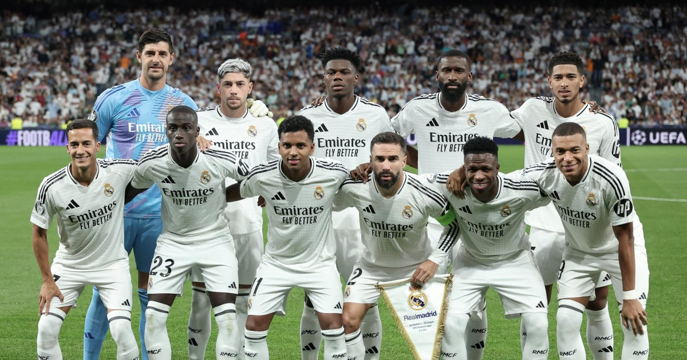
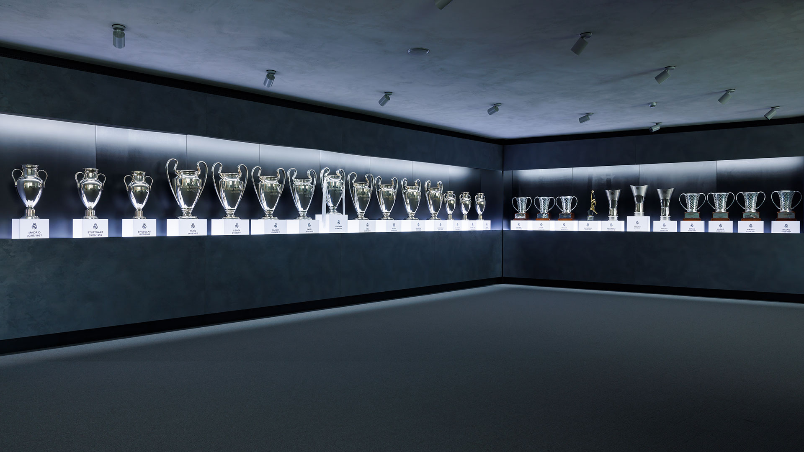
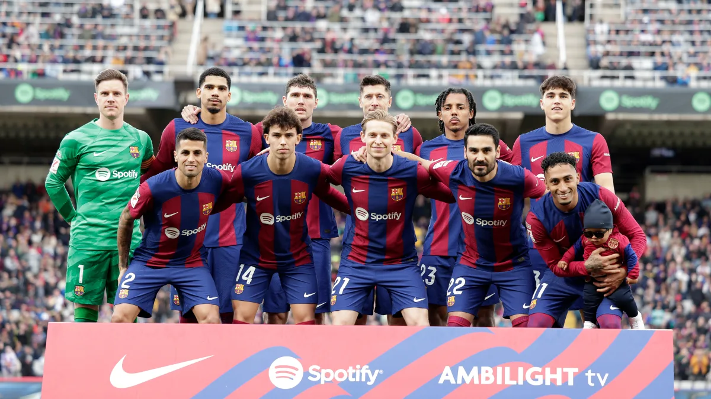
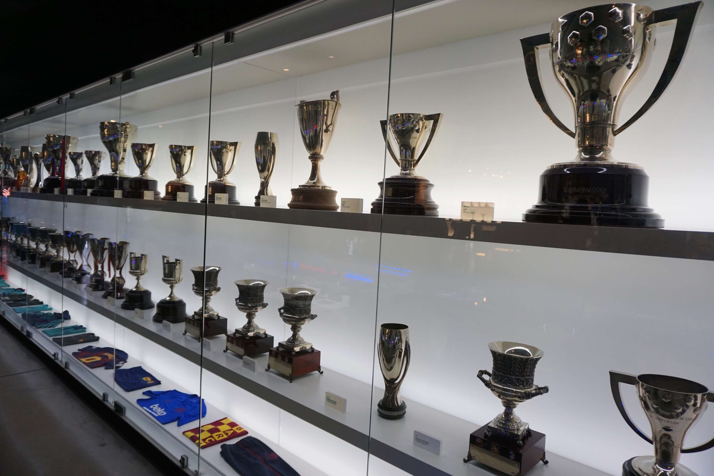
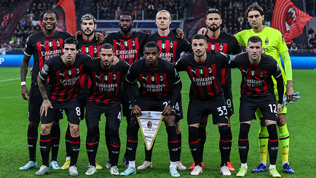
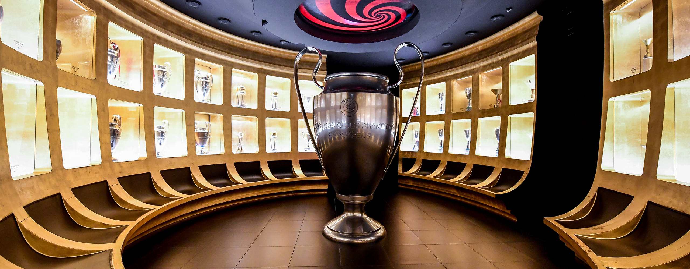
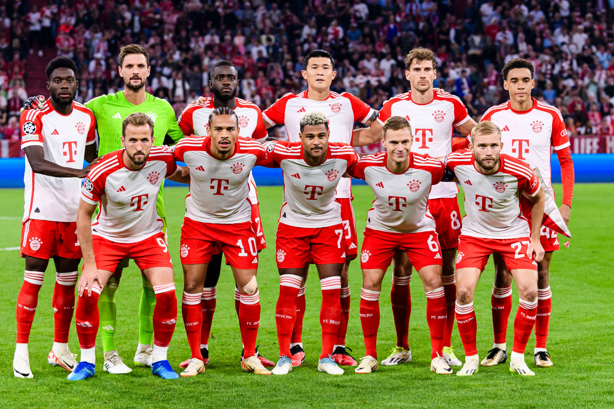
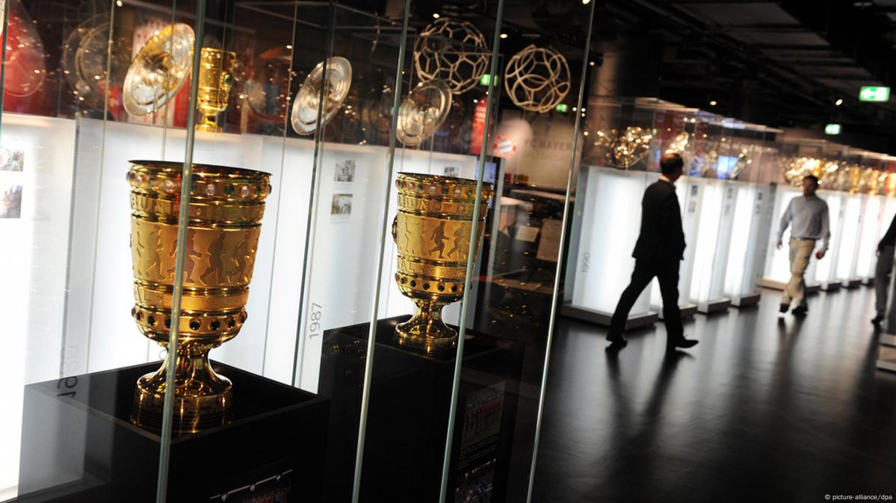
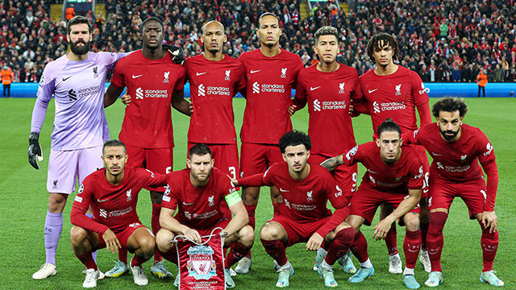
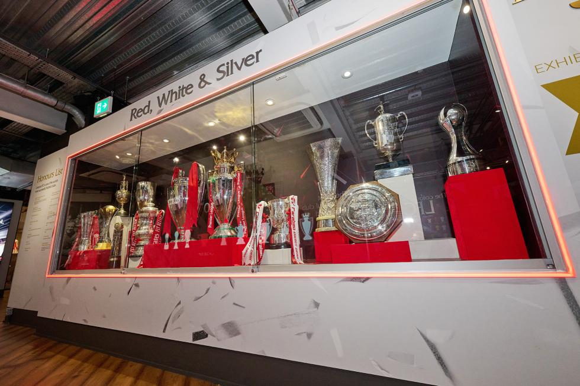

Real Madrid CF |
|
|---|---|
|
El Real Madrid Club de Fútbol es considerado el club más exitoso en la historia del fútbol. Fundado el 6 de marzo de 1902, ha sido una potencia tanto en España como en el ámbito internacional. Su prestigio se basa en una rica historia de triunfos, grandes jugadores y una filosofía de juego ofensivo. El equipo juega en el Estadio Santiago Bernabéu, ubicado en Madrid, con capacidad para más de 80,000 espectadores. Actualmente, está en proceso de remodelación para convertirse en uno de los estadios más modernos del mundo. El Real Madrid es reconocido por su mentalidad de lucha hasta el final, algo que ha quedado demostrado en remontadas épicas en la Champions League. Su lema "Hasta el final, vamos Real" refleja su espíritu competitivo. |
|
|  | |
| Palmarés | |
| Ligas de Campeones de la UEFA | 14 |
| La Liga | 35 |
| Copas del Rey | 19 |
| Supercopas de España | 14 |
| Mundiales de Clubes de la FIFA | 5 |
| Supercopas de Europa | 5 |
|  | |
| Jugadores Legendarios | |
| Cristiano Ronaldo | |
| Raúl González | |
| Alfredo Di Stéfano | |
| Zinedine Zidane | |
| Ferenc Puskás | |
| Sergio Ramos | |
| Iker Casillas | |
| Karim Benzema | |
FC Barcelona |
|
|---|---|
|
El FC Barcelona fue fundado el 29 de noviembre de 1899 y es uno de los clubes más importantes y populares del mundo. Conocido por su estilo de juego basado en la posesión del balón y el juego en equipo, el Barcelona ha sido un referente del fútbol mundial, especialmente durante las últimas décadas. El club ha sido parte fundamental de la historia del fútbol gracias a su enfoque tanto en el desarrollo de jugadores como en los títulos conquistados. El equipo juega en el famoso Camp Nou, uno de los estadios más grandes del mundo, con capacidad para más de 99,000 espectadores. A lo largo de los años, el Barça ha logrado conquistar numerosos títulos tanto a nivel nacional como internacional, siendo uno de los equipos más exitosos en Europa. |
|
|  | |
| Palmarés | |
| Ligas de Campeones de la UEFA | 5 |
| La Liga | 27 |
| Copas del Rey | 31 |
| Supercopas de España | 14 |
| Mundiales de Clubes de la FIFA | 3 |
| Supercopas de Europa | 5 |
|  | |
| Jugadores Legendarios | |
| Lionel Messi | |
| Xavi Hernández | |
| Andrés Iniesta | |
| Ronaldinho | |
| Johan Cruyff | |
| Carles Puyol | |
| Samuel Eto'o | |
| Sergio Busquets | |
AC Milan |
|
|---|---|
|
El AC Milan fue fundado el 16 de diciembre de 1899 y es uno de los clubes más prestigiosos del mundo. Con una rica historia llena de éxitos tanto a nivel nacional como internacional, ha sido un referente en el fútbol europeo y mundial. A lo largo de los años, el Milan ha sido conocido por su estilo de juego elegante y su capacidad para atraer a algunos de los mejores jugadores del mundo. El equipo juega en el icónico estadio San Siro, con capacidad para más de 80,000 espectadores. Con una amplia trayectoria en competiciones europeas, el Milan se ha mantenido a la vanguardia, manteniendo siempre una plantilla de calidad y una filosofía de éxito constante. |
|
|  | |
| Palmarés | |
| Ligas de Campeones de la UEFA | 7 |
| Serie A | 19 |
| Copas de Italia | 5 |
| Supercopas de Italia | 7 |
| Mundiales de Clubes de la FIFA | 1 |
| Supercopas de Europa | 5 |
|  | |
| Jugadores Legendarios | |
| Paolo Maldini | |
| Franco Baresi | |
| Alessandro Nesta | |
| Marco van Basten | |
| Kaka | |
| Andriy Shevchenko | |
| Clarence Seedorf | |
| Gianni Rivera | |
FC Bayern Múnich |
|
|---|---|
|
El FC Bayern Múnich fue fundado el 27 de febrero de 1900 y se ha consolidado como el club más exitoso de Alemania y uno de los más importantes del mundo. Ha dominado la Bundesliga y el fútbol europeo con su mentalidad ganadora y estilo de juego ofensivo. El equipo juega en el Allianz Arena, un estadio de última generación con capacidad para más de 75,000 espectadores. Es reconocido por su cantera y su filosofía de mantener un equipo fuerte y competitivo año tras año. |
|
|  | |
| Palmarés | |
| Ligas de Campeones de la UEFA | 6 |
| Bundesligas | 33 |
| Copas de Alemania (DFB-Pokal) | 20 |
| Supercopas de Alemania | 10 |
| Mundiales de Clubes de la FIFA | 2 |
| Supercopas de Europa | 2 |
|  | |
| Jugadores Legendarios | |
| Franz Beckenbauer | |
| Gerd Müller (máximo goleador histórico) | |
| Oliver Kahn | |
| Lothar Matthäus | |
| Philipp Lahm | |
| Bastian Schweinsteiger | |
| Robert Lewandowski | |
| Thomas Müller | |
Liverpool FC |
|
|---|---|
|
El Liverpool FC fue fundado en 1892 y ha establecido su nombre como uno de los clubes más grandes y exitosos del fútbol mundial. Con una historia llena de victorias y momentos memorables, el Liverpool ha sido conocido por su estilo de juego rápido, agresivo y su enfoque en el trabajo en equipo. A lo largo de los años, se ha ganado el cariño de una de las aficiones más apasionadas del mundo. El equipo juega en Anfield, un estadio emblemático con capacidad para más de 53,000 espectadores. La historia del Liverpool está marcada por su éxito en la liga inglesa y su dominio en competiciones europeas, particularmente en la Liga de Campeones de la UEFA. |
|
|  | |
| Palmarés | |
| Ligas de Campeones de la UEFA | 6 |
| Premier League | 19 |
| Copas de Inglaterra (FA Cup) | 8 |
| Copas de la Liga Inglesa | 9 |
| Supercopas de Europa | 4 |
| Mundiales de Clubes de la FIFA | 1 |
| Supercopas de Inglaterra | 15 |
|  | |
| Jugadores Legendarios | |
| Steven Gerrard | |
| Ian Rush | |
| Kenny Dalglish | |
| Jamie Carragher | |
| John Barnes | |
| Robbie Fowler | |
| Mo Salah | |
| Phil Neal | |